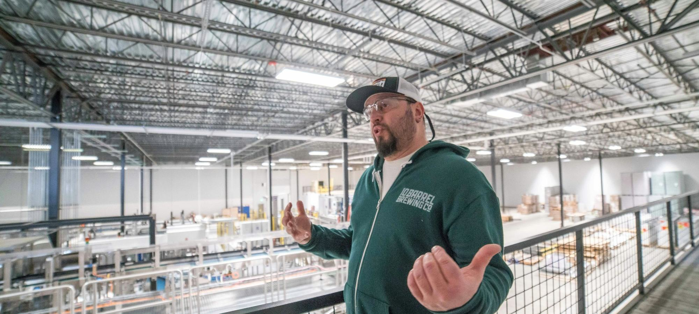

Quel logiciel pour gérer les contrats et l'arrivée des alternants ?
Gérer un contrat d'alternance et accueillir un nouvel alternant sont deux métiers, et peu d'outils font les deux.

Contrats d'apprentissage et de professionnalisation, stages, VIE. Nous comparons les prestataires qui gèrent les dossiers à votre place et les logiciels qui les automatisent, puis nous chiffrons les aides en vigueur.

Gérer un contrat d'alternance et accueillir un nouvel alternant sont deux métiers, et peu d'outils font les deux.


Gérer un contrat d'alternance et accueillir un nouvel alternant sont deux métiers, et peu d'outils font les deux.
Sept acteurs qui prennent en charge les contrats d'apprentissage et de professionnalisation, les stages ou le VIE, du cabinet RH au groupe d'intérim et à l'opérateur public.
Une PME de 40 salariés recrute en septembre un apprenti de 19 ans en BTS.
Neuf prestataires qui reprennent la logistique et l'administratif du plan de développement des compétences, du cabinet RH à la filiale d'un organisme de formation, notés sur les mêmes cinq critères pondérés.
Un responsable formation passe encore une bonne partie de sa semaine à relancer des organismes, éditer des convocations et rapprocher des factures.

Deux TMS spécialisés, deux éditeurs nés du métier de la formation, et des fiches fonctionnelles qui se ressemblent beaucoup sur le papier.
Note globale sur 10, relevé de démonstration. La couverture (alternance, stages, VIE) et l'outillage pèsent plus que le volume de contrats, sur lequel Cimes devance le premier.
Voir la méthode de notation


Comparez deux prestataires sur nos critères en un clic.
NOOUS arrive premier de notre comparatif (8,7/10) parce qu'il couvre alternance, stages et coordination VIE avec son propre logiciel, devant Groupe Cimes (8,5/10), qui gère le plus gros volume, et Develop'Invest (8,1/10).
Depuis le 8 mars 2026, une entreprise de moins de 250 salariés reçoit 5 000 € pour un apprenti préparant un diplôme jusqu'au bac, 4 500 € au niveau bac+2 et 2 000 € de bac+3 à bac+5. Le montant est majoré à 6 000 € pour un apprenti en situation de handicap.
Non, l'aide à l'embauche de 2026 vise les contrats d'apprentissage. Le contrat de professionnalisation reste financé par l'OPCO selon les niveaux de prise en charge de la branche.
Des critères pondérés notés sur 10, couverture des contrats, outillage, maîtrise des financements, fiabilité administrative et accompagnement, en relevé de démonstration. Le poids de chaque critère est affiché en tête de chaque comparatif.
Le volontariat international en entreprise est piloté par Business France, opérateur public. Un prestataire privé peut coordonner les dossiers et sourcer les candidats, pas se substituer à Business France.
Un email par semaine, le classement du mois, les nouveaux comparatifs et les changements de règles sur le financement de la formation.
Pas de publicité, désinscription en un clic.